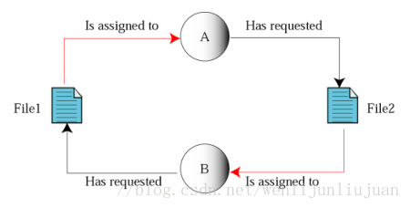
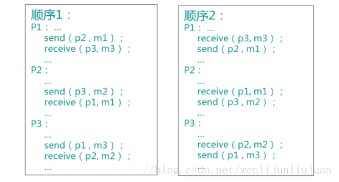
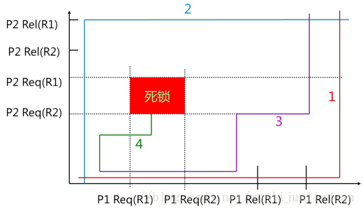
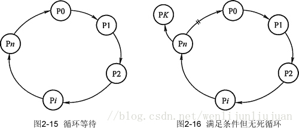
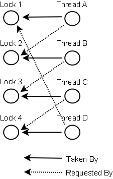

本文转载自：死锁，死锁的四个必要条件以及处理策略
什么是死锁
多线程以及多进程改善了系统资源的利用率并提高了系统的处理能力。然而，并发执行也带来了新的问题——死锁。
死锁是指两个或两个以上的进程（线程）在运行过程中因争夺资源而造成的一种僵局（Deadly-Embrace) ) ，若无外力作用，这些进程（线程）都将无法向前推进。
下面我们通过一些实例来说明死锁现象。
先看生活中的一个实例，2个人一起吃饭但是只有一双筷子，2人轮流吃（同时拥有2只筷子才能吃）。某一个时候，一个拿了左筷子，一人拿了右筷子，2个人都同时占用一个资源，等待另一个资源，这个时候甲在等待乙吃完并释放它占有的筷子，同理，乙也在等待甲吃完并释放它占有的筷子，这样就陷入了一个死循环，谁也无法继续吃饭。。。
在计算机系统中也存在类似的情况。例如，某计算机系统中只有一台打印机和一台输入设备，进程P1正占用输入设备，同时又提出使用打印机的请求，但此时打印机正被进程P2 所占用，而P2在未释放打印机之前，又提出请求使用正被P1占用着的输入设备。这样两个进程相互无休止地等待下去，均无法继续执行，此时两个进程陷入死锁状态。
关于死锁的一些结论：
饥饿（Starvation）指一个进程一直得不到资源。
死锁和饥饿都是由于进程竞争资源而引起的。饥饿一般不占有资源，死锁进程一定占有资源。
资源的类型
可重用资源和消耗性资源
可重用资源（永久性资源）
可被多个进程多次使用，如所有硬件。
只能分配给一个进程使用，不允许多个进程共享。
进程在对可重用资源的使用时，须按照请求资源、使用资源、释放资源这样的顺序。
系统中每一类可重用资源中的单元数目是相对固定的，进程在运行期间，既不能创建，也不能删除。
消耗性资源（临时性资源）
又称临时性资源，是由进程在运行期间动态的创建和消耗的。
消耗性资源在进程运行期间是可以不断变化的，有时可能为0。
进程在运行过程中，可以不断地创造可消耗性资源的单元，将它们放入该资源类的缓冲区中，以增加该资源类的单元数目。
进程在运行过程中，可以请求若干个可消耗性资源单元，用于进程自己消耗，不再将它们返回给该资源类中。
可消耗资源通常是由生产者进程创建，由消费者进程消耗。最典型的可消耗资源是用于进程间通信的消息。
可抢占资源和不可抢占资源
可抢占资源
可抢占资源指某进程在获得这类资源后，该资源可以再被其他进程或系统抢占。对于这类资源是不会引起死锁的。
CPU 和主存均属于可抢占性资源。
不可抢占资源
一旦系统把某资源分配给该进程后，就不能将它强行收回，只能在进程用完后自行释放。
磁带机、打印机等属于不可抢占性资源。
死锁产生的原因
- 竞争不可抢占资源引起死锁
通常系统中拥有的不可抢占资源，其数量不足以满足多个进程运行的需要，使得进程在运行过程中，会因争夺资源而陷入僵局，如磁带机、打印机等。只有对不可抢占资源的竞争才可能产生死锁，对可抢占资源的竞争是不会引起死锁的。 - 竞争可消耗资源引起死锁
- 进程推进顺序不当引起死锁
进程在运行过程中，请求和释放资源的顺序不当，也同样会导致死锁。例如，并发进程 P1、P2分别保持了资源R1、R2，而进程P1申请资源R2，进程P2申请资源R1时，两者都会因为所需资源被占用而阻塞。
信号量使用不当也会造成死锁。进程间彼此相互等待对方发来的消息，结果也会使得这 些进程间无法继续向前推进。例如，进程A等待进程B发的消息，进程B又在等待进程A 发的消息，可以看出进程A和B不是因为竞争同一资源，而是在等待对方的资源导致死锁。竞争不可抢占资源引起死锁
如：共享文件时引起死锁
系统中拥有两个进程P1和P2，它们都准备写两个文件F1和F2。而这两者都属于可重用和不可抢占性资源。如果进程P1在打开F1的同时，P2进程打开F2文件，当P1想打开F2时由于F2已结被占用而阻塞，当P2想打开1时由于F1已结被占用而阻塞，此时就会无线等待下去，形成死锁。

竞争可消耗资源引起死锁
如：进程通信时引起死锁
系统中拥有三个进程P1、P2和P3，m1、m2、m3是3可消耗资源。进程P1一方面产生消息m1，将其发送给P2，另一方面要从P3接收消息m3。而进程P2一方面产生消息m2，将其发送给P3，另一方面要从P1接收消息m1。类似的，进程P3一方面产生消息m3，将其发送给P1，另一方面要从P2接收消息m2。
如果三个进程都先发送自己产生的消息后接收别人发来的消息，则可以顺利的运行下去不会产生死锁，但要是三个进程都先接收别人的消息而不产生消息则会永远等待下去，产生死锁。

进程推进顺序不当引起死锁
上图中，如果按曲线1的顺序推进，两个进程可顺利完成；如果按曲线2的顺序推进，两个进程可顺利完成；如果按曲线3的顺序推进，两个进程可顺利完成；如果按曲线4的顺序推进，两个进程将进入不安全区D中，此时P1保持了资源R1，P2保持了资源R2，系统处于不安全状态，如果继续向前推进，则可能产生死锁。

产生死锁的四个必要条件
互斥条件
进程要求对所分配的资源（如打印机）进行排他性控制，即在一段时间内某资源仅为一个进程所占有。此时若有其他进程请求该资源，则请求进程只能等待。
不可剥夺条件
进程所获得的资源在未使用完毕之前，不能被其他进程强行夺走，即只能由获得该资源的进程自己来释放（只能是主动释放)。
请求与保持条件
进程已经保持了至少一个资源，但又提出了新的资源请求，而该资源已被其他进程占有，此时请求进程被阻塞，但对自己已获得的资源保持不放。
循环等待条件
存在一种进程资源的循环等待链，链中每一个进程已获得的资源同时被链中下一个进程所请求。即存在一个处于等待状态的进程集合{Pl, P2, …, pn}，其中Pi等待的资源被P(i+1)占有（i=0, 1, …, n-1)，Pn等待的资源被P0占有，如图2-15所示。
直观上看，循环等待条件似乎和死锁的定义一样，其实不然。按死锁定义构成等待环所要求的条件更严，它要求Pi等待的资源必须由P(i+1)来满足，而循环等待条件则无此限制。 例如，系统中有两台输出设备，P0占有一台，PK占有另一台，且K不属于集合{0, 1, …, n}。
Pn等待一台输出设备，它可以从P0获得，也可能从PK获得。因此，虽然Pn、P0和其他 一些进程形成了循环等待圈，但PK不在圈内，若PK释放了输出设备，则可打破循环等待, 如图2-16所示。因此循环等待只是死锁的必要条件。

资源分配图含圈而系统又不一定有死锁的原因是同类资源数大于1。但若系统中每类资 源都只有一个资源，则资源分配图含圈就变成了系统出现死锁的充分必要条件。
以上这四个条件是死锁的必要条件，只要系统发生死锁，这些条件必然成立，而只要上述条件之一不满足，就不会发生死锁。
产生死锁的一个例子:
1 | /** |
处理死锁的方法
- 预防死锁：通过设置某些限制条件，去破坏产生死锁的四个必要条件中的一个或几个条件，来防止死锁的发生。
- 避免死锁：在资源的动态分配过程中，用某种方法去防止系统进入不安全状态，从而避免死锁的发生。
- 检测死锁：允许系统在运行过程中发生死锁，但可设置检测机构及时检测死锁的发生，并采取适当措施加以清除。
- 解除死锁：当检测出死锁后，便采取适当措施将进程从死锁状态中解脱出来。
预防死锁
破坏“互斥”条件:
就是在系统里取消互斥。若资源不被一个进程独占使用，那么死锁是肯定不会发生的。但一般来说在所列的四个条件中，“互斥”条件是无法破坏的。因此，在死锁预防里主要是破坏其他几个必要条件，而不去涉及破坏“互斥”条件。
注意：互斥条件不能被破坏，否则会造成结果的不可再现性。
破坏“占有并等待”条件:
破坏“占有并等待”条件，就是在系统中不允许进程在已获得某种资源的情况下，申请其他资源。即要想出一个办法，阻止进程在持有资源的同时申请其他资源。
方法一：创建进程时，要求它申请所需的全部资源，系统或满足其所有要求，或什么也不给它。这是所谓的 “ 一次性分配”方案。
方法二：要求每个进程提出新的资源申请前，释放它所占有的资源。这样，一个进程在需要资源S时，须先把它先前占有的资源R释放掉，然后才能提出对S的申请，即使它可能很快又要用到资源R。
破坏“不可抢占”条件：
破坏“不可抢占”条件就是允许对资源实行抢夺。
方法一：如果占有某些资源的一个进程进行进一步资源请求被拒绝，则该进程必须释放它最初占有的资源，如果有必要，可再次请求这些资源和另外的资源。
方法二：如果一个进程请求当前被另一个进程占有的一个资源，则操作系统可以抢占另一个进程，要求它释放资源。只有在任意两个进程的优先级都不相同的条件下，方法二才能预防死锁。
破坏“循环等待”条件：
破坏“循环等待”条件的一种方法，是将系统中的所有资源统一编号，进程可在任何时刻提出资源申请，但所有申请必须按照资源的编号顺序（升序）提出。这样做就能保证系统不出现死锁。
避免死锁
理解了死锁的原因，尤其是产生死锁的四个必要条件，就可以最大可能地避免、预防和解除死锁。所以，在系统设计、进程调度等方面注意如何让这四个必要条件不成立，如何确定资源的合理分配算法，避免进程永久占据系统资源。此外，也要防止进程在处于等待状态的情况下占用资源。因此，对资源的分配要给予合理的规划。
预防死锁和避免死锁的区别：
预防死锁是设法至少破坏产生死锁的四个必要条件之一,严格的防止死锁的出现,而避免死锁则不那么严格的限制产生死锁的必要条件的存在,因为即使死锁的必要条件存在,也不一定发生死锁。避免死锁是在系统运行过程中注意避免死锁的最终发生。
常用避免死锁的方法
有序资源分配法
这种算法资源按某种规则系统中的所有资源统一编号（例如打印机为1、磁带机为2、磁盘为3、等等），申请时必须以上升的次序。系统要求申请进程：
1、对它所必须使用的而且属于同一类的所有资源，必须一次申请完；
2、在申请不同类资源时，必须按各类设备的编号依次申请。例如：进程PA，使用资源的顺序是R1，R2； 进程PB，使用资源的顺序是R2，R1；若采用动态分配有可能形成环路条件，造成死锁。
采用有序资源分配法：R1的编号为1，R2的编号为2；
PA：申请次序应是：R1，R2
PB：申请次序应是：R1，R2
这样就破坏了环路条件，避免了死锁的发生。
银行家算法
详见银行家算法.
常用避免死锁的技术
加锁顺序（线程按照一定的顺序加锁）
加锁时限（线程尝试获取锁的时候加上一定的时限，超过时限则放弃对该锁的请求，并释放自己占有的锁）
死锁检测
加锁顺序
当多个线程需要相同的一些锁，但是按照不同的顺序加锁，死锁就很容易发生。
如果能确保所有的线程都是按照相同的顺序获得锁，那么死锁就不会发生。看下面这个例子：
1 | Thread 1: |
如果一个线程（比如线程3）需要一些锁，那么它必须按照确定的顺序获取锁。它只有获得了从顺序上排在前面的锁之后，才能获取后面的锁。
例如，线程2和线程3只有在获取了锁A之后才能尝试获取锁C(译者注：获取锁A是获取锁C的必要条件)。因为线程1已经拥有了锁A，所以线程2和3需要一直等到锁A被释放。然后在它们尝试对B或C加锁之前，必须成功地对A加了锁。
按照顺序加锁是一种有效的死锁预防机制。但是，这种方式需要你事先知道所有可能会用到的锁(译者注：并对这些锁做适当的排序)，但总有些时候是无法预知的。
加锁时限
另外一个可以避免死锁的方法是在尝试获取锁的时候加一个超时时间，这也就意味着在尝试获取锁的过程中若超过了这个时限该线程则放弃对该锁请求。若一个线程没有在给定的时限内成功获得所有需要的锁，则会进行回退并释放所有已经获得的锁，然后等待一段随机的时间再重试。这段随机的等待时间让其它线程有机会尝试获取相同的这些锁，并且让该应用在没有获得锁的时候可以继续运行(译者注：加锁超时后可以先继续运行干点其它事情，再回头来重复之前加锁的逻辑)。
以下是一个例子，展示了两个线程以不同的顺序尝试获取相同的两个锁，在发生超时后回退并重试的场景：
1 | Thread 1 locks A |
在上面的例子中，线程2比线程1早200毫秒进行重试加锁，因此它可以先成功地获取到两个锁。这时，线程1尝试获取锁A并且处于等待状态。当线程2结束时，线程1也可以顺利的获得这两个锁（除非线程2或者其它线程在线程1成功获得两个锁之前又获得其中的一些锁）。
需要注意的是，由于存在锁的超时，所以我们不能认为这种场景就一定是出现了死锁。也可能是因为获得了锁的线程（导致其它线程超时）需要很长的时间去完成它的任务。
此外，如果有非常多的线程同一时间去竞争同一批资源，就算有超时和回退机制，还是可能会导致这些线程重复地尝试但却始终得不到锁。如果只有两个线程，并且重试的超时时间设定为0到500毫秒之间，这种现象可能不会发生，但是如果是10个或20个线程情况就不同了。因为这些线程等待相等的重试时间的概率就高的多（或者非常接近以至于会出现问题）。
(译者注：超时和重试机制是为了避免在同一时间出现的竞争，但是当线程很多时，其中两个或多个线程的超时时间一样或者接近的可能性就会很大，因此就算出现竞争而导致超时后，由于超时时间一样，它们又会同时开始重试，导致新一轮的竞争，带来了新的问题。)
这种机制存在一个问题，在Java中不能对synchronized同步块设置超时时间。你需要创建一个自定义锁，或使用Java5中java.util.concurrent包下的工具。写一个自定义锁类不复杂，但超出了本文的内容。后续的Java并发系列会涵盖自定义锁的内容。
检测死锁
一般来说，由于操作系统有并发，共享以及随机性等特点，通过预防和避免的手段达到排除死锁的目的是很困难的。这需要较大的系统开销，而且不能充分利用资源。为此，一种简便的方法是系统为进程分配资源时，不采取任何限制性措施，但是提供了检测和解脱死锁的手段：能发现死锁并从死锁状态中恢复出来。因此，在实际的操作系统中往往采用死锁的检测与恢复方法来排除死锁。
*死锁检测与恢复是指系统设有专门的机构，当死锁发生时，该机构能够检测到死锁发生的位置和原因，并能通过外力破坏死锁发生的必要条件，从而使得并发进程从死锁状态中恢复出来。 *
死锁检测是一个更好的死锁预防机制，它主要是针对那些不可能实现按序加锁并且锁超时也不可行的场景。
每当一个线程获得了锁，会在线程和锁相关的数据结构中（map、graph等等）将其记下。除此之外，每当有线程请求锁，也需要记录在这个数据结构中。
当一个线程请求锁失败时，这个线程可以遍历锁的关系图看看是否有死锁发生。例如，线程A请求锁7，但是锁7这个时候被线程B持有，这时线程A就可以检查一下线程B是否已经请求了线程A当前所持有的锁。如果线程B确实有这样的请求，那么就是发生了死锁（线程A拥有锁1，请求锁7；线程B拥有锁7，请求锁1）。
当然，死锁一般要比两个线程互相持有对方的锁这种情况要复杂的多。线程A等待线程B，线程B等待线程C，线程C等待线程D，线程D又在等待线程A。线程A为了检测死锁，它需要递进地检测所有被B请求的锁。从线程B所请求的锁开始，线程A找到了线程C，然后又找到了线程D，发现线程D请求的锁被线程A自己持有着。这是它就知道发生了死锁。
下面是一幅关于四个线程（A,B,C和D）之间锁占有和请求的关系图。像这样的数据结构就可以被用来检测死锁。

解除死锁
一旦检测出死锁，就应立即釆取相应的措施，以解除死锁。
死锁解除的主要方法有：
1) 资源剥夺法。挂起某些死锁进程，并抢占它的资源，将这些资源分配给其他的死锁进程。但应防止被挂起的进程长时间得不到资源，而处于资源匮乏的状态。
2) 撤销进程法。强制撤销部分、甚至全部死锁进程并剥夺这些进程的资源。撤销的原则可以按进程优先级和撤销进程代价的高低进行。
3) 进程回退法。让一（多）个进程回退到足以回避死锁的地步，进程回退时自愿释放资源而不是被剥夺。要求系统保持进程的历史信息，设置还原点。